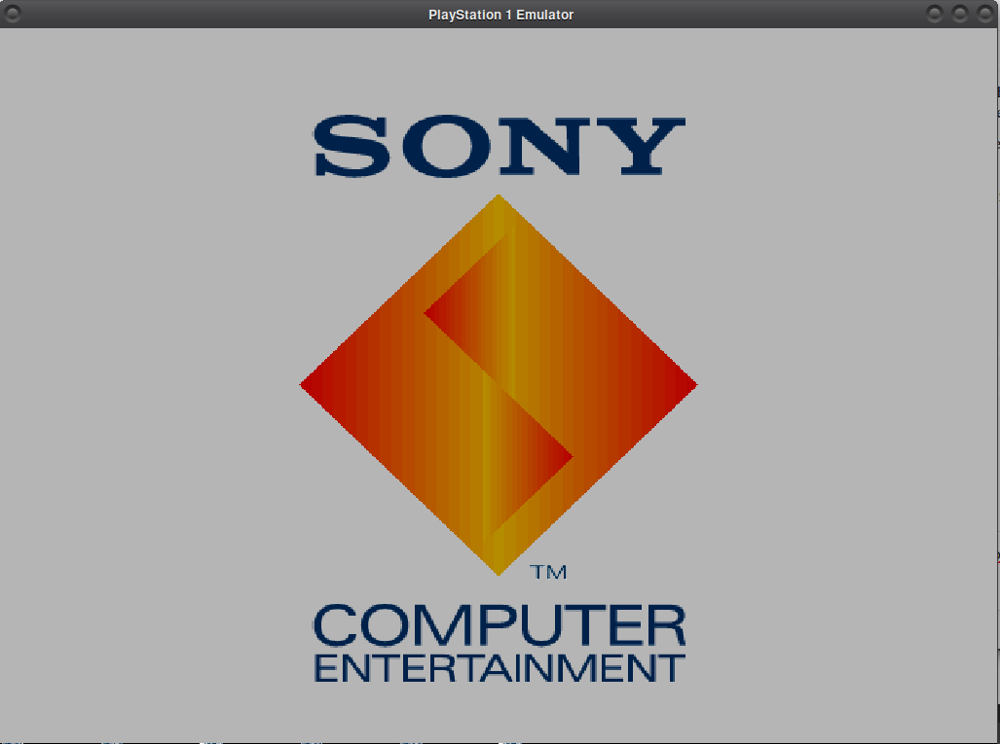
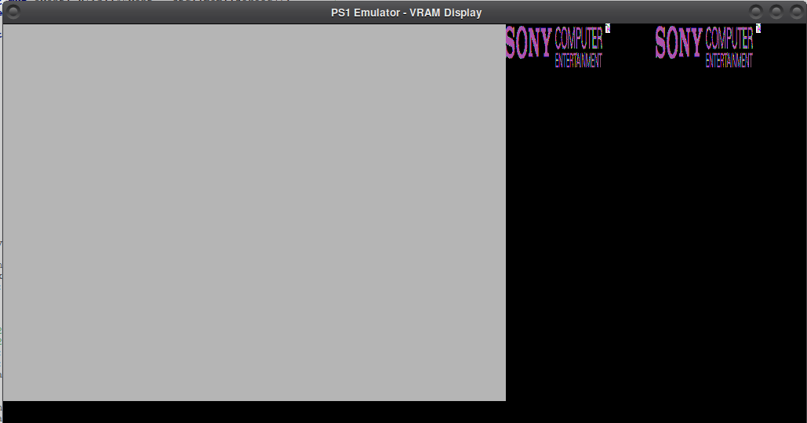
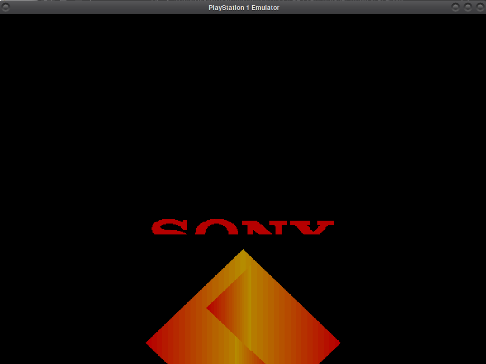
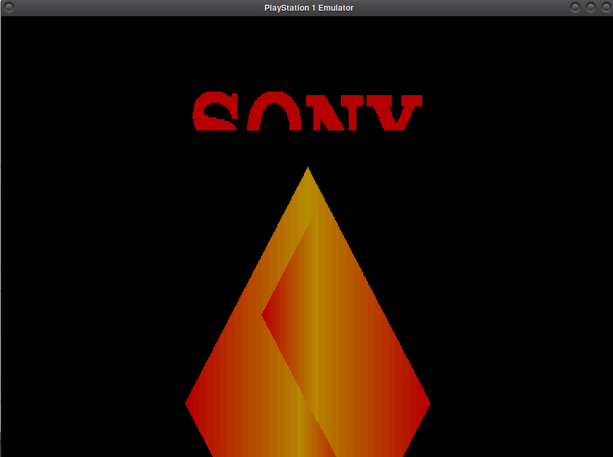

a playstation 1 emulator in rust. it boots the bios, draws to vram, and plays the startup chime. the chime sounds like a midi file running on a broken sound card, so that's the current boss fight.
the gpu fixes paid off. the bios now gets all the way to the sony computer entertainment logo and it looks right: text in the right place, nothing cropped, and the gradient on the diamond intact. compare it with the screenshots further down.

the current build, in tv mode.a recording of the current build.
audio
the chime is... a chime
the bios plays that startup sound by uploading adpcm samples into the spu's 512 kb of sound ram over dma channel 4, then keying on a few voices. mine does all of that and you can recognise the tune. it just sounds like a midi version of it played through a sound card that's falling apart, with clipping on top. here's a 5 second capture the emulator dumps to chime.wav on its own:
chime.wav (straight out of the emulator, unfixed)
i went through my spu code to figure out why. nothing here is confirmed yet, but this is my suspect list, roughly in order of how much i think each one matters:
no adsr envelopes. the envelope registers are ignored, so every voice is at full volume the moment it keys on and gets cut instantly on key off. that gives you harsh attacks, clicks, and notes that never fade. the real chime depends on its envelopes a lot.
no interpolation. pitched voices just grab the nearest sample instead of using the gaussian interpolation the real spu does. that's a pretty direct route to the harsh, aliased, "cheap synth" sound.
clipping. up to 24 voices get summed at full volume and clamped once at the end. without envelopes bringing voices down, overlapping notes slam into the limits.
no reverb. the real thing washes the chime in reverb and mine is completely dry, which makes everything sound thinner and more obvious.
volume sweep bit. voice volume registers can be in "sweep" mode (bit 15). i read them as plain signed numbers, so a value with that bit set turns into a big negative volume (inverted phase).
spu timing. i only generate audio once per frame, 735 samples after running a whole frame of cpu. any register write that happens during the frame is effectively quantised to 16.7 ms. and if the emulator ever can't keep up with real time, the alsa buffer underruns and you get crackle.
small stuff. the final adpcm block of a non-looping sample gets dropped when the end flag is hit, i clamp the shift value to 12 (i think the hardware treats 13-15 like 9, need to check), and a master volume of 0 gets treated as full volume as a hack.
plan: envelopes first, then interpolation, then see how bad it still is before touching reverb.
earlier
how it used to look (terrifying)
before the gpu was behaving, these are the kinds of things the bios screen turned into. i'm keeping them here on purpose.

the full vram view (tab key). a big grey fill on the left, and the sony computer entertainment logo uploaded into vram twice with the colours and proportions all wrong.

tv mode. the gradient on the diamond already works, but the whole picture sits too low: "sony" is chopped in half and the diamond runs off the bottom of the screen.

same logo, different problem: now the diamond is stretched tall and still cropped, and the sony text is still cut off.
the nice part is that the shapes and the shading were already right. it was mostly the placement and cropping that was off.
how it's put together
the guts
cpu
it's a mips r3000a starting at 0xBFC00000, the bios reset vector. every instruction counts as one cycle for now. it tracks both kinds of delay: the branch delay slot (the instruction after a branch always runs) and the load delay slot (a loaded value isn't visible until one instruction later), plus cop0 exceptions with sr, cause, epc and badvaddr. interrupts get checked every step by mirroring the bus's pending state into bit 10 of cause. there's a unit test that makes sure a vblank interrupt actually reaches the handler, because getting that wrong is a great way to lose a weekend.
bus
addresses get masked with 0x1FFFFFFF, which makes kuseg, kseg0 and kseg1 all land on the same physical map without any special casing. 2 mb of ram is mirrored across the first 8 mb, the 512 kb bios sits at 0x1FC00000, and there's a 1 kb scratchpad. anything the bios touches that i haven't mapped yet isn't silently ignored: the bus counts every unmapped read and write per address, so i can see exactly what it's poking at and what to implement next.
gpu
gp0 and gp1 command handling, fills, cpu↔vram transfers, vram-to-vram copies, polygons, rectangles and lines. triangles use an edge-function rasterizer with a top-left fill rule bias, and there's texture sampling through cluts, semi-transparency blending, texture modulation and the mask bit. it draws straight into a 1024x512 array of 15-bit pixels, same layout as real vram, so dma transfers and texture uploads just work. the gpu has its own unit tests (fill, flat triangle, textured quad, vram readback).
gte
the geometry coprocessor, cop2. it's all fixed-point math: 44-bit mac overflow tracking with flag bits, ir saturation, the sxy/sz/colour fifos, and the reciprocal-based divide used for perspective. two known shortcuts: commands finish instantly instead of taking real cycles, and the weird "far colour" bug in mvmva isn't reproduced.
dma, timers, cd-rom
dma channels 2 (gpu, including linked lists), 4 (spu) and 6 (ordering table clear) are implemented, and finish instantly. the dicr interrupt logic is edge-triggered so the cpu only sees a new irq when it actually rises. the three root counters free-run with their different clock sources, and sync modes aren't done. the cd-rom controller acts like a console with no disc: it answers commands with the right interrupt types and delays, reports the bios date for the test command, and answers getid with the "no disc" error. there's a comment in there saying if the bios acts weird, try different status bytes, which is the most honest comment in the codebase.
no sdl
window and audio are both done by hand. the renderer opens xlib and glx at runtime, creates an opengl 3.3 core context, and uploads vram as a texture each frame, drawn with a tiny shader that crops to the display area. tab toggles between the 4:3 tv view and the full 1024x512 vram view. audio loads libasound with dlopen and tries pipewire, then pulse, then default. it's linux-only because of that, which i'm fine with for now.
main loop
564,480 cpu cycles per frame (33.8688 mhz / 60), then 735 audio samples (44.1 khz / 60), then vblank, render, and sleep to hold 60 fps. the first five seconds of audio get saved as chime.wav so i can look at what i'm actually producing instead of trusting my ears at 2 am.